cual fue el tanque mas grade
(El El supertanque habría sido tripulado por seis hombres y medía 10 m de largo, 3,71 m de ancho y 3,7 m de alto.
Debido al tamaño y peso del Maus, era poco probable que pudiera atravesar puentes o terrenos difíciles.
A finales de 1944 sólo se fabricaron y probaron dos tanques Maus.
Los dos prototipos fueron posteriormente destrozados antes de que el ejército ruso, que avanzaba, llegara a los campos de pruebas en 1945, y es poco probable que algún tanque Maus llegara a entrar en combate.
Las fuerzas rusas unieron la torreta del segundo tanque con el casco del primero y llevaron el vehículo a Moscú para su evaluación.
El tanque híbrido sobreviviente está en exhibición en el Museo de Tanques Rusos en Kubinka. habría sido tripulado por seis hombres y medía 10 m de largo, 3,71 m de ancho y 3,7 m de alto.
Debido al tamaño y peso del Maus, era poco probable que pudiera atravesar puentes o terrenos difíciles.
A finales de 1944 sólo se fabricaron y probaron dos tanques Maus.
Los dos prototipos fueron posteriormente destrozados antes de que el ejército ruso, que avanzaba, llegara a los campos de pruebas en 1945, y es poco probable que algún tanque Maus llegara a entrar en combate.
Las fuerzas rusas unieron la torreta del segundo tanque con el casco del primero y llevaron el vehículo a Moscú para su evaluación.
El tanque híbrido sobreviviente está en exhibición en el Museo de Tanques Rusos en Kubinka.
en que lugares se utilizaron los tanques alemanes
lugares.
1940-1941
Alemania usó la táctica Blitzkrieg de manera exitosa en contra de Polonia (atacada en septiembre de 1939), Dinamarca (abril de 1940), Noruega (abril de 1940), Bélgica (mayo de 1940), los Países Bajos (mayo de 1940), Luxemburgo (mayo de 1940), Francia (mayo de 1940), Yugoslavia (abril de 1941) y Grecia (abril de 1941). Alemania no derrotó a Gran Bretaña, que estaba protegida del ataque alemán terrestre por el Canal de la Mancha y la Marina Real Británica.
1941-1942
A pesar de las guerras continuas con Gran Bretaña, las fuerzas alemanas invadieron la Unión Soviética en junio de 1941. Al principio la táctica Blitzkrieg alemana parecía tener éxito. Lograron que las fuerzas soviéticas retrocedieran más de 600 millas hacia las puertas de Moscú, con pérdidas pasmosas. En diciembre de 1941, Hitler unilateralmente le declaró la guerra a los Estados Unidos, que, consecuentemente, agregó su tremendo poder económico y militar a favor de la coalición en contra de Hitler. Una segunda ofensiva alemana contra la Unión Soviética en 1942 llevó a los soldados alemanes hacia el este, a las costas del río Volga y a la ciudad de Stalingrado. Sin embargo, la Unión Soviética lanzó una contraofensiva en noviembre de 1942, cuando atrapó y destrozó a un ejército alemán entero en Stalingrado
1945
A pesar de las guerras continuas con Gran Bretaña, las fuerzas alemanas invadieron la Unión Soviética en junio de 1941. Al principio la táctica Blitzkrieg alemana parecía tener éxito. Lograron que las fuerzas soviéticas retrocedieran más de 600 millas hacia las puertas de Moscú, con pérdidas pasmosas. En diciembre de 1941, Hitler unilateralmente le declaró la guerra a los Estados Unidos, que, consecuentemente, agregó su tremendo poder económico y militar a favor de la coalición en contra de Hitler. Una segunda ofensiva alemana contra la Unión Soviética en 1942 llevó a los soldados alemanes hacia el este, a las costas del río Volga y a la ciudad de Stalingrado. Sin embargo, la Unión Soviética lanzó una contraofensiva en noviembre de 1942, cuando atrapó y destrozó a un ejército alemán entero en Stalingrado
triunfo de la blitzkrieg de 1939-1940
Con el presente volumen comenzamos una serie dentro de la colección Desperta Ferro Especiales dedicada al arma que sacudió los campos de batalla de Europa y el Mediterráneo durante la Segunda Guerra Mundial: los Panzer. Un recorrido por la evolución técnica, doctrinal y táctica de los carros de combate alemanes, acompañado por el relato de algunas de las batallas que confirmaron su supremacía. Esta primera entrega está dedicada al periodo inicial de la contienda, 1939-1940, cuando, mientras el resto del continente especulaba sobre cómo emplear el innovador concepto de los carros de combate y la guerra acorazada, Alemania, espoleada por el escozor de la derrota en la Primera Guerra Mundial y apoyándose en un grupo de fantásticos pensadores, desarrolló la división Panzer, pieza fundamental en el concepto de la Blitzkrieg o «guerra relámpago» que doblegaría de forma fulminante a todos los rivales de Alemania en el continente.
quienes fueron las fabricas de tanques
Los Panzer III y IV eran los tanques "reales" que Alemania había planeado para cuando comenzó la Segunda Guerra Mundial. Tenían una ingeniería similar y diferían ligeramente en longitud y armamento. Krupp construyó los tanques Panzer IV y Daimler-Benz los Panzer III .
cual fue el tanque mas producido
El Tiger fue la respuesta a la inesperada y formidable fuerza blindada de la Unión Soviética encontrada en los primeros meses de la Operación Barbarroja, particularmente en los T-34 y KV-1, pero últimos estudios y documentación detallada, ponen el proyecto como contramedida hacia los tanques pesados británicos y los cañones antitanque durante la Batalla de Francia, lógicamente en la Operación Barbarroja los problemas de lucha contra los carros soviéticos aceleraron el proyecto.
Durante su desarrollo se vieron los problemas que tenía el diseño con los motores existentes para mover el tanque pesado, a lo que se sumó la manipulación de Krupp para mantener el monopolio de la construcción de cañones y la escasez de tungsteno para los proyectiles. El informe de Porsche contrario a que se adoptase el cañón Flak de 88 mm que tenía preparado Rheinmetall para la torreta ya preparada fabricada por Fahrgestell, retrasaron aún más el proyecto del prototipo. El retraso se incremento aún más porque la Oficina de Desarrollo de Carros tuvo empantanado el proyecto del Tiger hasta el otoño de 1940, contraviniendo la orden directa de Hitler. El propio Ferdinand Porsche desobedeció las órdenes de la Oficina, y bajo su propia iniciativa se encargó de realizar la tarea independientemente, poniendo a sus ingenieros a trabajar en el diseño por él concebido del tanque pesado.
En noviembre de 1940 la Oficina de Desarrollo de Tanques inició oficialmente el proyecto e hizo un pedido a Nibelungenwerk para el montaje en serie de seis prototipos Panzerkampfwagen de 45 tn. Porsche, al tener el diseño muy avanzado, tardó muy poco en ponerlo en funcionamiento, pero al fabricarlo sin seguir las directrices militares se encontró con tantas trabas burocráticas que casi le hicieron empezar de nuevo la fabricación del prototipo. El motor todavía no se había decidido, pero el chasis y las orugas ya estaban en montaje cuando Krupp presentó su cañón modificado L/56 de 88 mm (que entonces tenía una velocidad en boca de 840 m/s con un casquillo de 931 mm de largo), lo que obligó a Porsche a cambiar la cúpula deprisa y corriendo para poder alojar en su interior tanto el cañón como la munición. El cañón modificado era el mismo que el Flak 18, pero cambiando las sujeciones y los puntos de mira.
Mientras se continuaba con la construcción de los prototipos, Krupp presentó a la oficina otro cañón, pero de calibre 105 mm denominado Kwk L/47. Este disparaba proyectiles con una velocidad en boca de 840 m/s montados en una vaina de 1100 mm, pero se descartó porque la efectividad del cañón de 88 mm estaba ya más que probada.
En la siguiente reunión de expertos y con Hitler de director del proyecto, se eligió el cañón de 88 mm como armamento principal del tanque pesado y se encargó la finalización de los 6 prototipos con un chasis de 80 mm de espesor en el frontal y de 60 mm en los laterales, y tres de las torretas con diseño de Porsche.
El Tiger I proporcionó al Heer su primer tanque equipado con el cañón de 88 mm, que había demostrado previamente su efectividad tanto contra blancos aéreos (para lo cual había sido creado) como terrestres (tanques, búnkeres y posiciones enemigas). Durante el curso de la guerra, el Tiger I entró en combate en todos los frentes de batalla que tenía Alemania. Por lo general fue desplegado en batallones de tanques independientes, y demostró ser un carro formidable.[cita requerida]
Mientras que el Tiger I era temido por sus oponentes, era técnicamente complicado, usaba materiales y métodos de producción caros y de trabajo intensivo, consumiendo mucho tiempo de producción. Por todo ello, solo fueron fabricadas 1347 unidades entre agosto de 1942 y agosto de 1944. El Tiger era propenso a ciertos tipos de fallos en las orugas que provocaban inmovilizaciones, aunque en general era mecánicamente fiable pero laborioso de mantener y complicado de transportar debido a sus ruedas de apoyo superpuestas y entrelazadas. En 1944 se dejó de producir en favor del Tiger II.
Apenas un puñado de tanques Tiger I sobreviven en museos y exposiciones. Quizás la muestra más notable es el Tiger 131 del Museo de Tanques de Bovington, el único que fue restaurado a condiciones de funcionamiento. El manual de entrenamiento de la tripulación, el Tigerfibel, se convirtió en una pieza de coleccionista.
The Rose regresará con su tercer single, "Red", el 13 de Agosto a las 6 PM KST.
tiger caracteristicas
| nombre | Fecha de lanzamiento | caracteristicas | ||||||||||||||||||||||||||||||||||||
| tiger | 1940 |
pesado |
| historia de servicio | Fecha de lanzamiento | caracteristicas |
| servicio 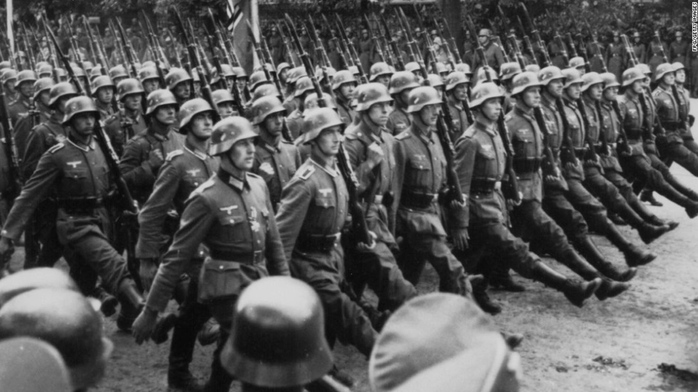 | 1942-1945 |
sirvio en la ss |
| operadores 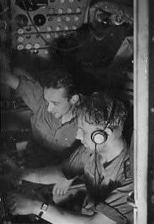 | 1940-1945 | heer(wehrmacht) waffen-ss |
| historia de produccion | Fecha de lanzamiento | caracteristicas |
| disenador 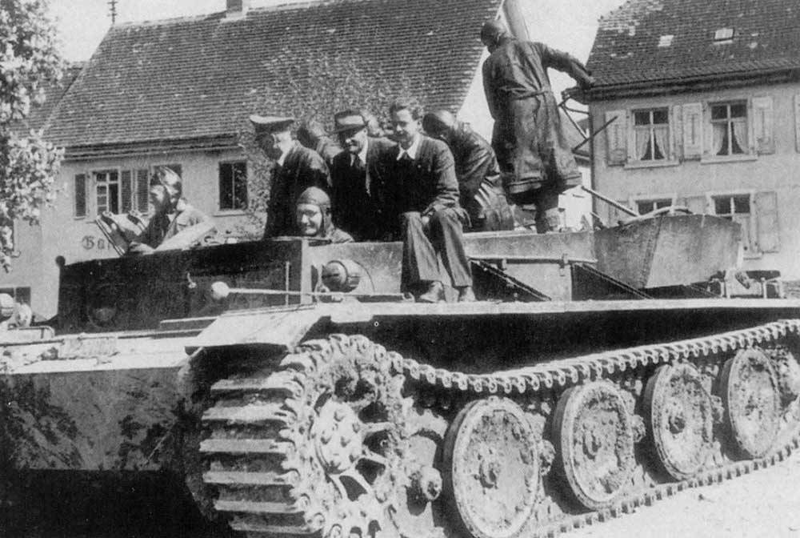 | 1939 | fabricante hentchel |
| coste de produccion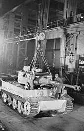 | 1940 |
321,000RM |
| anchura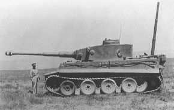 | 1939 | 3,55m
|
| tripulacion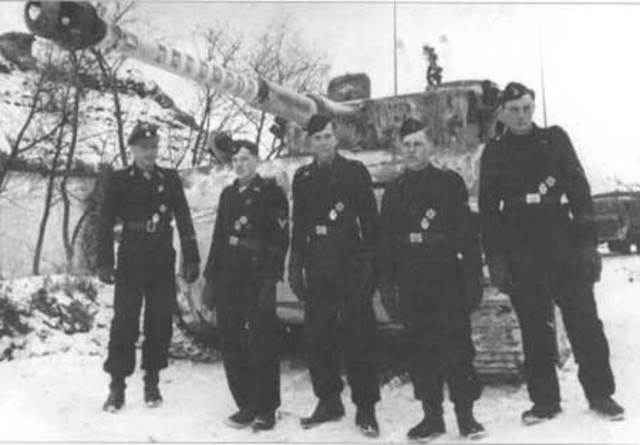 | 1940 | 5(comandante,
artillero,
cargador,
conductor,
radioametralladro)
|
| peso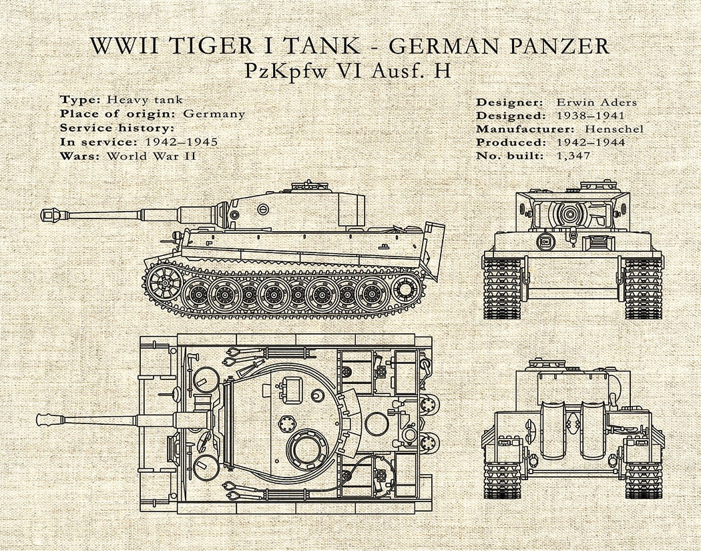 | 1940 | 58,t |
| longitud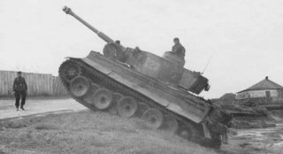 | 1940 | 6,26mm(chasis)
8,45mm(incluyendo cañon)
|
| arma primaria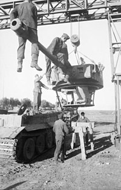 | 1940 | cañon kwk 36L/56 de 8,8cm (92 proyectiles) |
| arma secundaria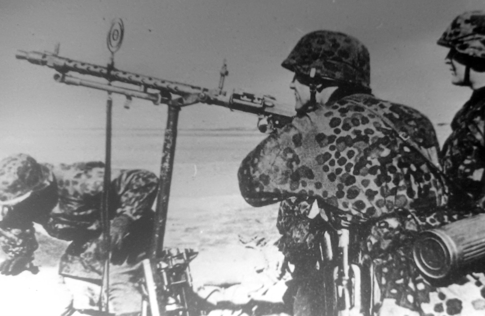 | 1940 | 2 ametralladoras MG34 de 7,92mm (4,800 proyectiles) |
tanques de megalomania
hay uno de 1000 tonelada
esta el tanque maus
tanques que no entraron en batalla
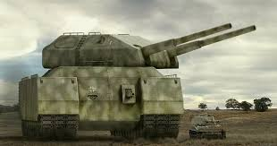 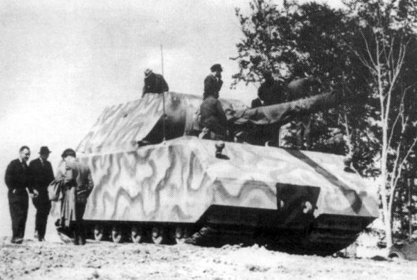caracteristicas de estos tanques que no entraron en batalla
el tanque de 1000 toneladas se llevo a cabo en 1939 se diseño ese año en 1944 se enpezo su fabricacio nose termino se desconoce su termino
el tanque maus se diseño en 1940 pero fue rechazado poco despues ese mismo año ya se produjo pero era mas costoso porlo tanto se atraso i se produjo los panzer 4 que era mas barato ya se finalizo en 1945 solo se iso el chasis y ya habia rendido alemania y termino en manos de los rusos
si el tanques el maus se hubiera producido en masa historiadores confirman que hubiera cambiado el curso de la guerra
si el tanque de 1000 toneladas se hubiera porducido iva a tener problemas de pasar puentes al igual que el maus por su peso pero si era casi indestructibles
sabias que el mientras mas grade es el tanque no siempre es el megor
los tanques alemanes como el tiger los aliados para remoncar uno se requeria de dos sherman americanos
para destruir un tanque tiger 1 lo aliados tenian problemas para enfrentarlo parque para destruir uno se requiere 5 sherman americanos
cuando el tanque ruso el T34 entro en batalla los alemanes vieron que tenian que mejorar sus tanques y se produjo el panzer 4 le iso frente al tanque ruso
cuando el tanque tigre entro en batalla por primera ves destruyo dosenas de tanques americanos en el norte de africa
cuando el tanque tigre entro en batalla en stalingrado cuando los rusos capturaron un tigre vieron su blindaje era mas superior que sus taques asi nacio el IS2 sovietico
despues que los rusos tenian al IS2 asi nacio el tiger 2 destruyo dosenas de IS2
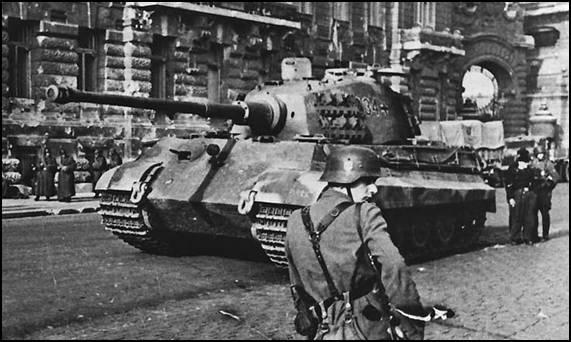